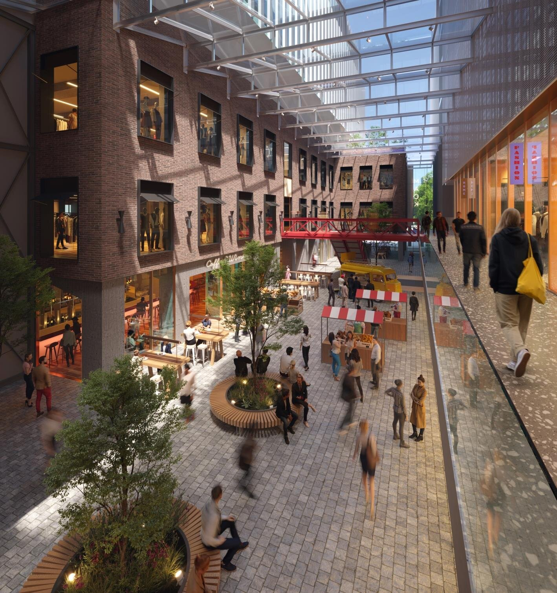
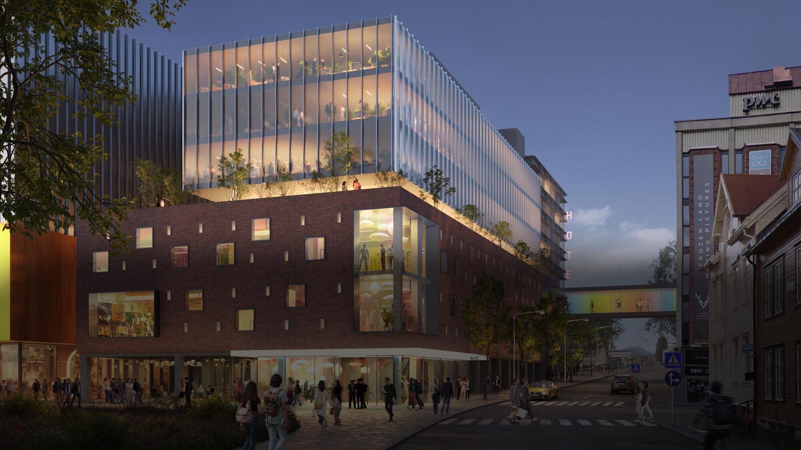
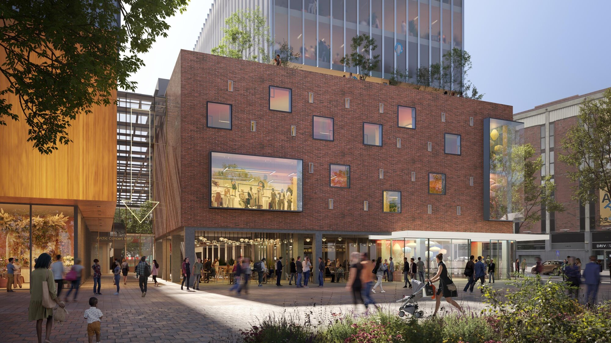
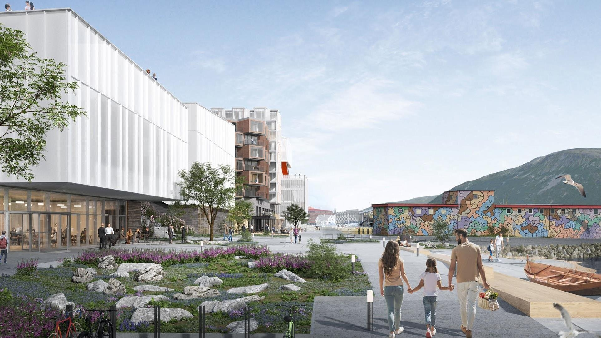

Kontor iMarkedsgata
Tre kontoretasjer i Mack Kvartalet i Tromsø sentrum. Velg et lokale og en planløsning, så bygges veggene om i modellen under.
Juni 2027Innflytting
Lokale
Planløsning
Tallene er telt fra Monns plantegninger og er omtrentlige. Arealene er BTA fra utleier. Dra i modellen for å se fra en annen side.
Markedsgata

Teglgården og Nybygget står på hver side av en gate under glass, med hotellet mot sjøen og Universitetsmuseet som nabo. Kontorene ligger over butikkene, med egen inngang fra trapp og heis.
Ledige lokaler
Arealene er omtrentlige og oppgitt per oktober 2026.
Kontor
Butikk og servering
Mesanin mot sjøen
Visning etter avtale
Ring eller skriv til Jørgen Sollie
Kvartalet
Mellom Storgata og havnepromenaden, et par minutter fra Domkirken, hurtigbåtene og kaia.



Visning
Jørgen Sollie
Eiendomsdirektør, Eiendomsspar
Storgata 1, Tromsø sentrum. Visning etter avtale.